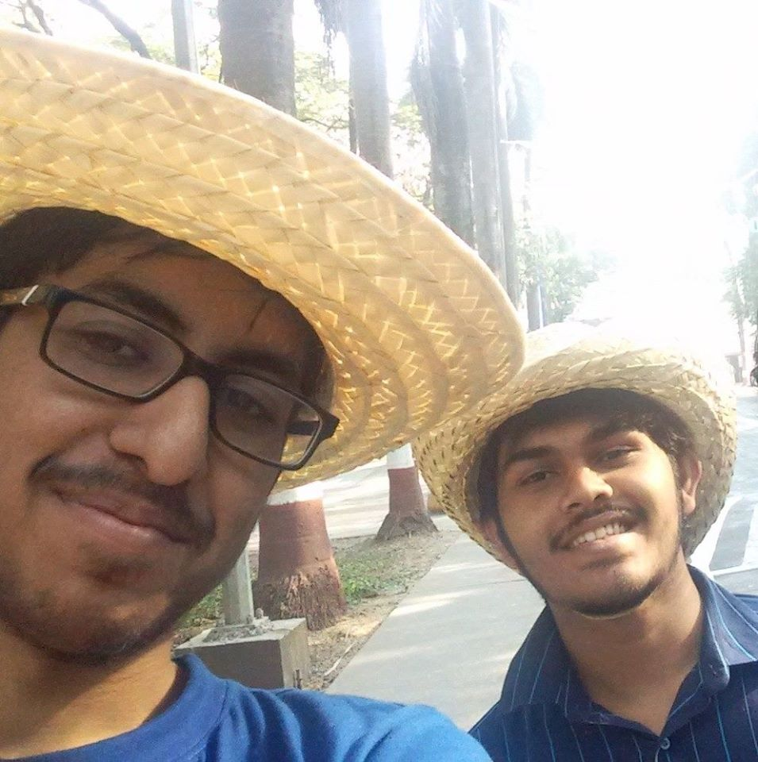
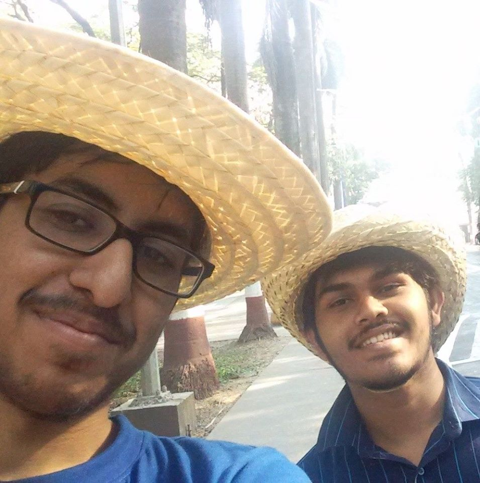

- Stage 1
- Stage 2
- Stage 3
- Stage 4
- Stage 5

 

The Final Scenario
Debian dies a tragic death, killed by Cron due to pure jealousy.
Py turns Cron in to the police and he spends the rest of his life in prison.
Kwargs becomes the shoulder for Py to cry on and Py gradually starts to realise her feelings towards him.
Kwargs finds what he came for, the White Tongued frog, and also much more.